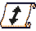
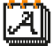

Repositori General

El projecte
Xarxes
The Matrix Archive és un arxiu web destinat a recollir obres, accions o intervencions de net.art polític, artivisme i hacktivisme concebudes des de la dècada dels noranta, és a dir, els seus inicis, fins al present any 2024, així com totes aquelles obres, accions o intervencions que es produïsquen en el futur. L’arxiu es concep com un arxiu col·laboratiu a través del qual els usuaris de la xarxa puguen afegir obres a l’arxiu a través d’un senzill formulari. El present projecte naix arran el treball de final de màster de la curadora d’aquesta versió inicial de l’arxiu: Martina Vicedo, consistent en la caracterització de les pràctiques artístiques activistes en la web; Martina, conscient de les seues limitacions, decideix aliar-se amb el dissenyador gràfic i web Andreu Vicedo. D’aquesta manera l’equip creador de The Matrix Archive fica un repositori d’obres creixent a la disposició de qui desitge utilitzar-lo, siga per l’elaboració de projectes artístics, investigacions acadèmiques o professionals o bé, simplement, per curiositat.
Nom de l'obra
Autor/es
Any/s
Descripció de l'obra
Adjunta una imatge representativa